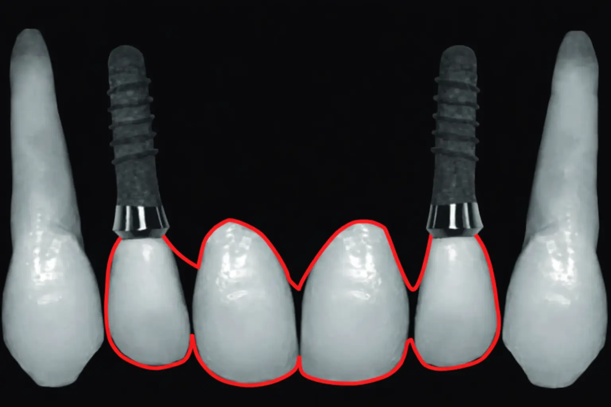

Share Hub — ایمپلنت در بی دندانی قدامی فک بالا: جای دندانهای ۱ یا ۲؟

فرض کنیم چهار دندان قدامی فک بالا از دست رفتهاند و قرار است این ناحیه با دو ایمپلنت بازسازی شود. سؤال کلیدی در چنین شرایطی این است:
ایمپلنتها بهتر است در موقعیت دندانهای ۱ قرار بگیرند یا دندانهای ۲؟
منطق طراحی پروتز ایجاب میکند که ایمپلنتها تا حد امکان به یکدیگر نزدیک نباشند. به همین دلیل، در بسیاری از موارد قرار دادن آنها در موقعیت دندانهای ۲ انتخاب منطقیتر و قابلکنترلتری محسوب میشود.
۱. نزدیکی دو ایمپلنت؛ چالش زیبایی اجتنابناپذیر
زمانی که دو ایمپلنت در کنار هم قرار میگیرند، تشکیل پاپی بین آنها ذاتاً دشوار و غیرقابلپیشبینی است. حتی با بهترین جراحی و طراحی پروتزی، رسیدن به پاپیلای ایدهآل بین دو ایمپلنت محدودیت بیولوژیک دارد.
در مقابل، وقتی دو دندان سانترال بهصورت پونتیک طراحی میشوند، کنترل فرم بافت نرم سادهتر است و رسیدن به نتیجهی زیبایی مطلوب، قابلپیشبینیتر خواهد بود.
۲. یک اصل مهم طراحی: تا حد امکان ایمپلنتها کنار هم قرار نگیرند
یکی از اصول کلیدی در طراحی درمانهای ایمپلنتی این است که در صورت امکان، از قرار گرفتن ایمپلنتها در مجاورت مستقیم یکدیگر پرهیز شود.
قرار دادن ایمپلنتها در موقعیت دندانهای ۲ باعث ایجاد فاصلهی منطقی بین پایهها شده و طراحی پروتزی سالمتر، قابلکنترلتر و قابلدفاعتری فراهم میکند.
۳. کانتیلیور؛ در این شرایط الزاماً بد نیست، اما اگر میشود حذفش کرد چرا نگهش داریم؟
کانتیلیور در این حالت ذاتاً یک طراحی فاجعهآمیز محسوب نمیشود و در بسیاری از شرایط حتی میتواند عملکرد قابل قبولی داشته باشد. اما وقتی امکان انتخاب طرحی وجود دارد که اساساً نیازی به کانتیلیور نداشته باشد، منطقی است که گزینهی کمریسکتر انتخاب شود.
با قرار دادن ایمپلنتها در موقعیت دندانهای ۲:
- نیازی به نزدیک کردن ایمپلنتها به یکدیگر وجود ندارد
- امکان طراحی بدون کانتیلیور فراهم میشود
- نتیجه از نظر زیبایی و منطق درمانی قابلدفاعتر خواهد بود
جمعبندی
در بازسازی چهار دندان قدامی با دو ایمپلنت:
- ترجیح بر این است که ایمپلنتها تا حد امکان به هم نزدیک نباشند
- تشکیل پاپی بین دو ایمپلنت ذاتاً دشوار و غیرقابلپیشبینی است
- پونتیک بودن دو سانترال معمولاً نتیجهی زیبایی بهتری ایجاد میکند
- کانتیلیور در این شرایط الزاماً بد نیست، اما اگر قابل حذف باشد، انتخاب منطقی حذف آن است
بنابراین، در اغلب سناریوها قرار دادن ایمپلنتها در موقعیت دندانهای ۲ انتخابی منطقیتر، قابلدفاعتر و از نظر زیبایی قابلکنترلتر محسوب میشود.